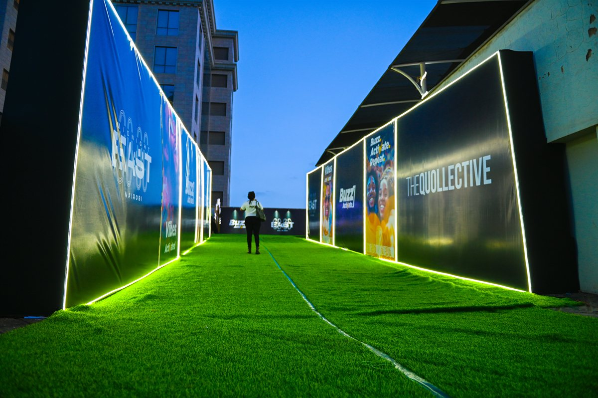

Entertainment Event / GDC PROJECT
Midnight East Nairobi End of Year Party
Midnight East Nairobi brought thousands of revelers together for a vibrant New Year's Eve concert experience, transforming the Simba Corp Aspire Centre into a high-energy destination for music, celebration, and immersive production.
Experiential & Entertainment Events- Midnight East Nairobi
Client: Buzz Activate Kenya
Venue: Simba Corp Aspire Centre
Date: 31 December 2025
Location: Nairobi, Kenya
A Cross-City Countdown Celebration
Midnight East Nairobi brought thousands of revelers together for a vibrant New Year's Eve concert experience, transforming the Simba Corp Aspire Centre into a high-energy destination for music, celebration, and immersive production.
The Nairobi celebration formed part of a simultaneous regional countdown experience staged across four African cities — Nairobi, Accra, Kigali, and Kampala — connecting audiences across the continent in a shared moment of celebration as the clock struck midnight.
GDC partnered with Buzz Activate Kenya to deliver the technical build and experiential environment for the Nairobi edition, creating an immersive concert space designed for energy, movement, and unforgettable countdown moments.
PROJECT GALLERY
A closer look.


PROJECT FILM